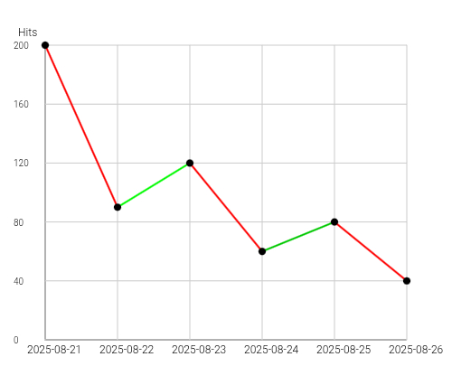

👋Добро пожаловать в LostBox! Это обучение пользованию LostBox Tools. Здесь ты узнаешь, как пользоваться инструментами. 😏
🗃️HEX Редактор: Открывайте бинарные файлы, и вместо каракулей, наконец-то будет реальное содержимое! 😃
Нажми кнопку "Выберите файл" чтобы загрузить свой файл! 😏
Перед тобой будет поле с странными цифрами. Это - байты! 😉 "ДНК" файла, через которые можно напрямую на низком уровне менять содержимое. Например - если поменять байты картинки, у человека на картинке ноги могут сдвинуться вправо 😬
Ты можешь менять разные байты, но ни в коем случае не трогай первые байты! Они называются "магическими", на них держится весь мир (файл). Пример: Магические байты, это паспорт файла. Если их удалить, то охранник у магазина не поймет кто это, и выдаст "Файл невалиден". 😊
Нажми "Проверить", чтобы проверить измененный файл на валидность, или узнать о самом файле. 😏
Нажми "Скачать", чтобы скачать измененный шедевр!
После переезда на GitHub предпросмотр заработал! 😄
📷Массовый BASE-64: Загружайте по несколько фото, и получайте склеенный base-64 файл!
Нажмите на "+" посередине, и выберите нужные файлы. 🙂
Нажмите "Создать баз64 в txt". 😏
Готово! Теперь ваши несколько фоток склеены в один TXT с BASE-64 и их названиями! 😏
ℹ️Информатор: Сомневаетесь в валидности вашего баз-64 файла? 😏
Нажмите "+", и выберите один txt файл с base64 😄
Скрипт либо выдаст "валидный", либо "невалидный", если base64 сломан 😳
⏰Быстрый BASE-64:
Нажми "+" 😏
Выбери один файл 😏
Нажми "Скачать"! 😃
📄Массовый TXT: Нужно объединить кучу текстовых файлов в один? 😏
Нажмите "+" 😏
Выберите нужные файлы 😏
Готово! Единый txt файл со всем содержимым и названиями выбранных файлов у вас! 😉
😺Проверка JSON: Тут можно проверить, правильный ли у вас JSON файл.
Впишите в поле свой json, или загрузите его. 😁
Готово! Парсер либо скажет "валидный" 😃, либо "невалидный" 🔧.
📸Фото на выбор: Тут можно нажать на кнопку и получить рандомное фото! 😺
Нажмите "Показать картинку", чтобы отобразить рандомную картинку, и "Скачать фото", чтобы скачать это фото! 😁
Прошу прочитать правила ("¡" сверху в углу) прежде чем получать фото. Спасибо! 😏
📼Камера 2009: Хотите получить качество как из 2009? 😏
Разрешите сайту доступ к камере. 🫠
Потом нажмите белый кружок, чтобы сделать фото из 2009, либо зажмите, чтобы сделать видео! 😉
Сохранить можно, когда вы уже сделали фото/видео, просто нажмите "💾"! 😁
⏳Прошло времени: Хотите узнать сколько времени прошло между выбранными годами, или сколько прошло с того времени до нашего времени? 😏
В верхней части выберите формат (дни, минуты, часы), и выберите год, узнайте сколько прошло времени оттуда! 😉
В нижней части вы можете выбрать две даты, и узнать, сколько прошло времени между ними. 🕓
Редактор: Это редактор с предпросмотром! 😎
Напиши html код в поле, и с помощью треугольника посмотри его как настоящую страницу! 😉
Нажми 💾 чтобы скачать свой код, напиши название, выбери формат, нажми потом ⏬, и скачивай! 😃
Нажми >_ чтобы открыть консоль (пока что консоль в разработке) 💻
Нажми 🧾, чтобы вставить стандартный LostBox шаблон. ✨
Нажми 🧹, чтобы уничтожить все в поле. 🚿
Предупреждение: закрывающий тег может ставиться навязчиво. 😬 Уже исправляется! 😉
📖Переводчик: Это переводчик с ограниченным словарем и мгновенным переводом! 😏
Работают только два языка: русский и английский. 😔
Введите русское или английское слово, и оно выдаст результат! 😉
Можно даже и английское и русское слово в одном переводе сделать. 😁
📑Склейка фото: Это функция склеивания фото! 😀
Нажмите "+", и выберите свои фото. 😏
Готово! Нажмите "Скачать png", и у вас будет склеенные фото! 😁
Примечание: Некоторые галереи длинное фото могут пометить как поврежденное. 😬
✉️Дешифратор: Частая проблема, когда windows1251 прочитан как UTF-8? 🥴
Впишите сломанный текст в дешифратор. 😏
Выберите кодировку, в которой был написан текст (сломанный) 😏
Нажмите "расшифровать". Готово! 😉
🫨Раздавилка: Хотите получить раздавленное фото?
Вставьте свое фото (квадрат посередине) 😏
Выберите свою пропорцию (например 9:16). 😀
Нажмите "Скачать". Готово! Теперь "раздавленное" фото у вас! 😉
🧱Пикселизация: Тут можно вставить фото, выбрать разрешение, и получить фото с выбранным разрешением!
Вставьте свое фото в "+" 😄
Выберите своё разрешение (ползунки). 😏
Нажмите "Скачать"! Готово! Не советую ставить разрешение больше самого фото, чуда не будет. 😊
CSV Парсер: Это CSV Парсер!
Нажмите "Выберите файл", и выберите свой .csv файл. 😅
Готово! Теперь у вас статистика как у биткоина, и её можно скачать кнопкой "Скачать .jpg"! 😊
🎼Генератор музыки: Добро пожаловать в генератор музыки! Тут можно с помощью смайликов сочинить простую 8-bit музыку! 😁
Музыку нужно создавать так: вводите, например: "🟩🟧🟩🟪🟨🟩🟦🟪🟨🟥🟩", это создаст музыку. 😏
Теперь её можно прослушать с помощью плеера, и скачать! 😊
Остальные инструкции будут в самой функции! 😉
🎟️Звуковая спектограмма: Добро пожаловать в звуковую спектограмму! 😄
Нажмите "Выберите файл", и выберите своё аудио. 🙃
Готово! Спектограмма создается в реальном времени, её можно посмотреть и скачать. 😉
Функция на стадии бета теста, файлы могут не загружаться 😢
🎨SVG Рисовалка: О! Это SVG Рисовалка! 😆 Тут можно нарисовать любую вещь, что придет в душу. 😉
Нажмите "✏️" чтобы рисовать, "📏" для прямых полос, "⬜" для квадратов, "🔴" для кругов, "🧽" чтобы стереть нарисованное! 😉
Нажмите "назад" чтобы отменить, "очистить" чтобы очистить холст, и "Скачать svg" чтобы скачать шедевр!
Эти разноцветные кружки — это цвет, чтобы шедевр не был однотипным! 😏
Вы можете скачать свое искусство кнопкой "Скачать svg"! 😁
🏛️️️Парсер римских/арабских цифр: Часто было, когда у тебя в учебнике по истории были римские цифры? 😄
Впиши английскими буквами римскую цифру, например: XVII. 😀
теперь на кнопку "конвертировать". 😏
готово! теперь цифры человекочитаемые! 😉
ты также можешь ввести арабские цифры, и сделать их римскими! 😌
🖼️️SVG Конвертер: Добро пожаловать в svg конвертер! 😄
Загрузи сюда свое фото. 😀
Фото преобразуется в SVG. 😏
А теперь нажми "Скачать"! 😉 SVG Версия загруженного фото у вас! 😉
Примечание: SVG Версия вашего фото весит в 50 раз больше 😵💫
🖼️️Проверка EXIF и удаление: Тут можно посмотреть exif данные фото, и удалить их! 😄
exif - это как паспорт файла. 😃 там записаны данные о телефоне, как фото сделано, под каким градусом, и т.д. 😏
нажми на иконку камеры, и загрузи свое фото. 😏
а теперь "извлечь exif", и узнай всю инфу о фото! 😊
если хочешь остаться анонимным челом, то нажми "скачать без exif", и получи уже очищенное фото! 😌 это не влияет на само изображение! 😉
⏰️SVG в реальном времени: тут можно писать svg, и получать результат! 😄
в поле напиши svg, и сверху будет предпросмотр. 😌
нажми "скачать", чтобы скачать свой шедевр. 😃
нажми "пример", чтобы получить пример svg. 🙂
нажми "очистить", чтобы удалить все введённое в поле 😢
📝Форматирование JOHN: Тут можно привести твой JSON в порядок! 😎
Вставь свой JSON в поле — даже если он в одну строку. 😏
Нажми "Форматировать" — получишь красивый вариант с отступами! ✨
Теперь можно скачать его кнопкой "Скачать"! 😊
Готово! теперь json может прочитать каждый John! ☺️
🧹Зачистка комментариев: Уберём все комментарии с твоего кода! 🧽
Вставь HTML, JS или CSS код с комментариями. 😄
Нажми "выберите файл", и загрузи свой файл! 😉
инструмент удалит 🙃:
// вот такие комментарии 😄
/* такие */ 😎
<!-- и такие! --> 😃
теперь нажми "скачать очищенный файл", и получишь чистый файл! 😉
Готово! Чистый код без лишнего текста! 🚀
👾Пиксель арт редактор: Хочешь нарисовать пиксель-арт фото? 😏 Добро пожаловать в редактор! 😊
Перед тобой два ползунка - протяни их под то разрешение, что ты хочешь сделать для своего арта! 😉
Теперь нажми "Создать холст"! 😊
После создания, протяни двумя пальцами до белого квадратика - это холст! 😌
Перед тобой режимы:
[👆], чтобы перетаскивать холст! ⬜
[🖌️], чтобы рисовать выбранным цветом! 🎨
[🧽], чтобы удалять нарисованное! 🙃
[🪣], чтобы залить определенную часть выбранным цветом! 😏
[🧻] - это пипетка, нажми этим режимом в выбранный цвет! 😌
Нажми [🧹], чтобы вернуться в главный экран! 😉
[🧮] делает шум - цвет не будет одним и тем же! 🙃
Нажимай разноцветные квадратики, или один квадратик снизу - чтобы выбрать свой цвет! 😃
Финальный шаг: Нажми "💾", и выбери расширение фото, "PNG" для прозрачного фона (в частях, что ты не зарисовал), "JPG" для обычного фото! ☺️
🥷Скрытие панелей: Видите кнопку "↑"? Нажмите на неё, и панели (с кнопками сверху и снизу) скроются! Чтобы вернуть, нажмите "↓"! 😎
Назад: Чтобы вернуться в главный экран, нажмите на логотип LostBox, и откроется главное меню! 😌
🎶Музыка: Сверху рядом с значком обучения есть красный значок музыки. Хотите включить музыку? Нажмите кнопку музыки! Быстро и просто, как хлопнуть в ладоши 👏. Примечание: Примечание выгнали из сайта 😢
⚠️Внимание! Для максимальной совместимости и корректной работы всех инструментов (HEX Редактор, Генератор музыки и т.д.) я рекомендую использовать Chromium движок (браузеры Chrome/Brave и т.д.). 😉 В других браузерах могут наблюдаться ошибки со скачиванием и работой аудио. 😢 Спасибо за понимание! 😊
✨ Нажимайте на кнопки снизу, прокручивайте их влево и вправо, и открывайте каждый инструмент! 😉
🌟Удачи! И помните — ваш LostBox всегда FoundBox! 😃